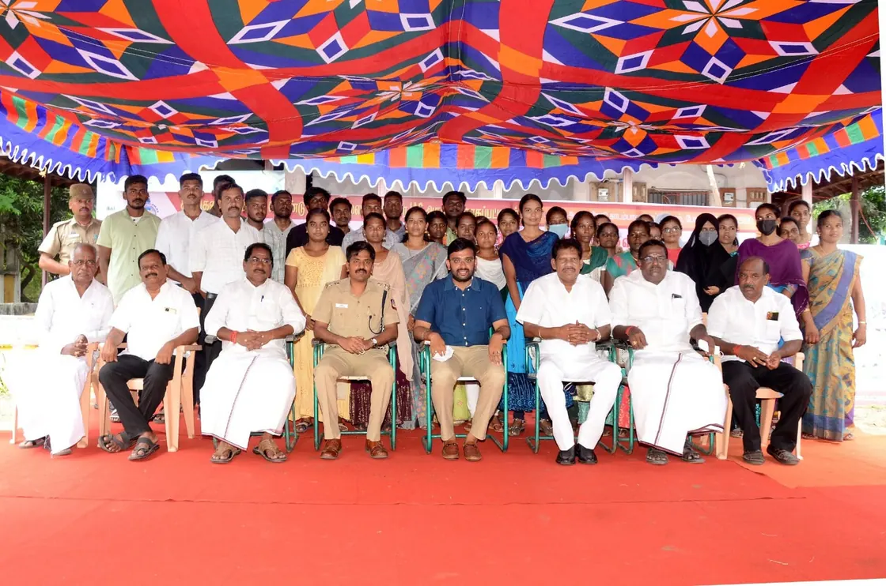
Kalangarai IAS Academy
Free coaching, model exams and mentoring for TNPSC, TNUSRB, SSC and RRB.
Kalangarai Charitable and Educational Trust gives rural, first-generation and economically disadvantaged students in Nagapattinam free coaching for TNPSC, TNUSRB, SSC, RRB and NEET — with mentoring that turns talent into government careers.
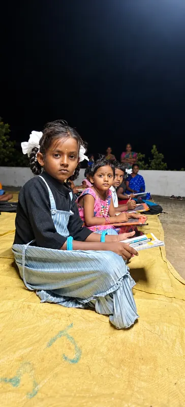
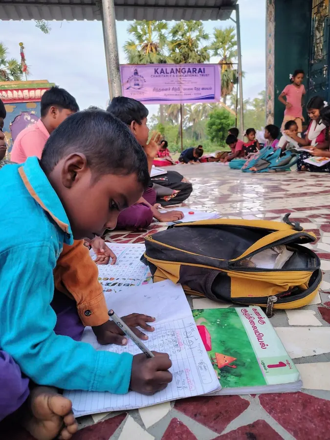

Every evening after school, underprivileged rural children come to a safe, child-centred space to learn — building curiosity, confidence and communication alongside their studies.
“We do not focus only on what children learn; we focus on who they become.”

Kalangarai Charitable and Educational Trust was established in 2018 to empower students, youth, women and economically disadvantaged communities in Nagapattinam and surrounding areas — with special attention to rural and first-generation learners.
Through Kalangarai IAS Academy and NEET Academy, we provide free coaching, study materials, mock tests and mentoring, and run Nagapattinam district's first free residential competitive examination training centre.
“A student's dreams should never be limited by the economic circumstances of their family.”
— V. Kamal, Founder & Managing TrusteeYoung people with limited access to quality coaching, resources and career guidance get structured preparation and the confidence to compete.
The first in their families to attempt higher education or competitive exams receive mentoring that helps them understand and reach opportunities.
Fisherfolk, tsunami-affected, daily-wage and farming families who cannot afford private coaching learn free of cost.
Free, structured coaching for the examinations that open doors to public service and professional education.
Group II & Group IV – Tamil Nadu government services.
Police Constable & Sub-Inspector recruitment, with physical training.
Physics, Chemistry & Biology with faculty from Chennai.
Central government staff selection examinations.
Railway Recruitment Board examinations.

Free coaching, model exams and mentoring for TNPSC, TNUSRB, SSC and RRB.
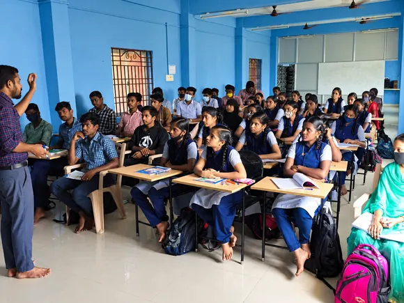
Free NEET coaching in Physics, Chemistry and Biology with weekly tests.

Nagapattinam district's first — rural aspirants stay and study full-time.

Ten learning models for rural children — academics, English, AI, sports and nutrition.
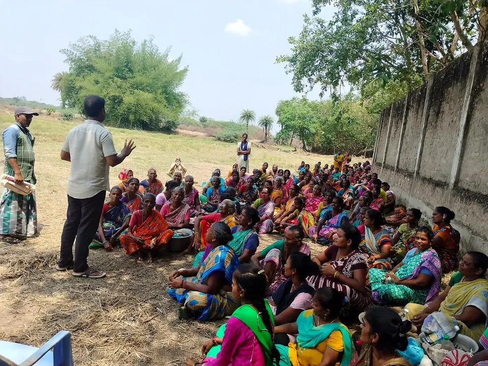
Awareness on savings, credit and livelihoods through Self-Help Groups.

Yoga Day since 2019, basketball camps and civic awareness for young people.
The Trust was registered in Nagapattinam in July 2018. In 2019 it held a Competitive Examination Awareness Programme at EGS Pillay College, introducing youth to UPSC, TNPSC, TNUSRB and RRB, followed by free model exams for TNPSC Group IV and police recruitment.

Senior government officials, community leaders and educationists came together to open the Free Training Centre, with the support of the District Collector, who also helped launch TNPSC and TNUSRB classes and the district's first free residential training centre.
500+ students reached
Dr. A. Arun Thamburaj, Mission Director of the National Health Mission, guided TNUSRB Constable and Sub-Inspector aspirants at the Kalangarai Free Training Centre on discipline, consistency, time management and self-confidence.
100+ students benefited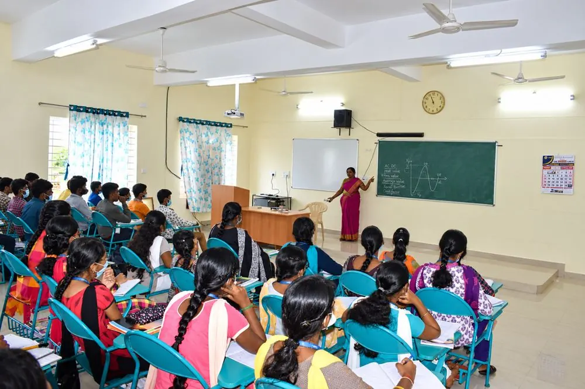
A free three-month NEET programme for students of Nagapattinam Government Model Schools, Nagore Modern School and VDP College — daily classes by Chennai faculty, weekly tests, performance analysis and individual mentoring.
8 NEET qualifiers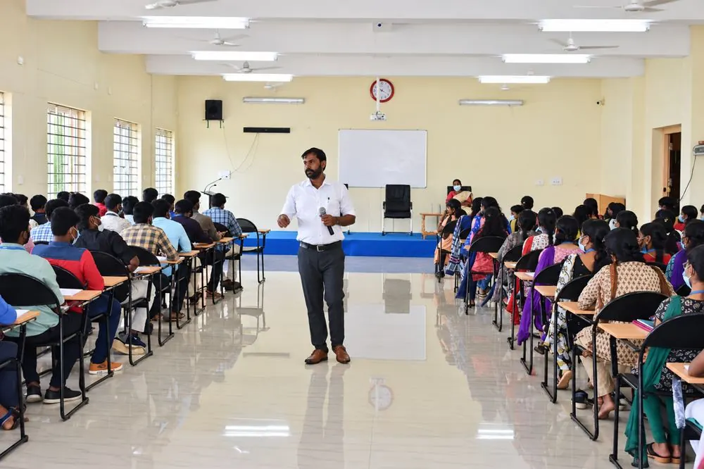
With the Tamil Nadu Fishermen Welfare Association, Kalangarai honoured gold-medal students of Dr. J. Jayalalithaa Fisheries University and ran TNPSC career-guidance programmes, offering them free coaching for public service.
Our after-school centre extends Kalangarai's work to younger children, combining academics, spoken English, AI awareness, nutrition and life skills.
Sons and daughters of fishermen, farmers and daily-wage workers — now serving in police, revenue, education and courts.

State-level basketball player from a tsunami-affected family; cleared the SI exam on her first attempt.

Farmer's daughter from Sikkal and Fisheries University gold medallist; now in court service while pursuing UPSC.
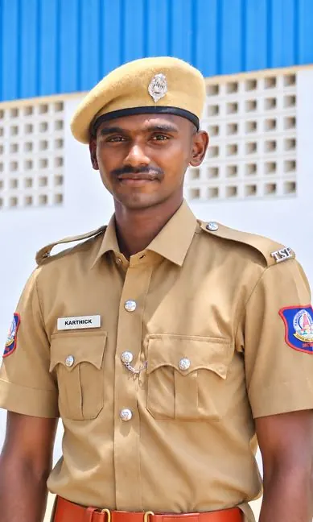
Cleared the 2024 exam and received his appointment within a year of starting preparation.

From a 2004 tsunami-affected family in Akkaraipettai; succeeded on his third attempt.

An awareness session changed his outlook; he cleared the exam within a year of joining.

Joined with his elder brother from Kadambadi and secured a government job within one year.

Son of a fisherman from tsunami-hit Keechankuppam; studied full-time at Kalangarai and cleared the exam in 2021.
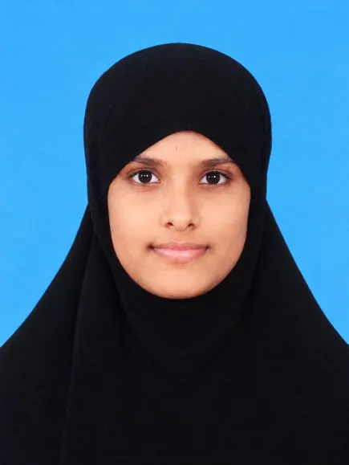
A mother of two who studied through her pregnancy and passed — and keeps pursuing her dream.

Keerthana, 25, lives with a visual disability; her father sells bananas from a pushcart in Kottar Vasapadi. She prepared at Kalangarai for three years, reaching the TNPSC Group II Mains and the Group IV posting stage more than once without an appointment.
She refused to give up. In 2025 she cleared TNPSC Group IV and joined the Education Department.
“To me, Kalangarai is not just an organisation; it is a family-like movement that believes in us.”


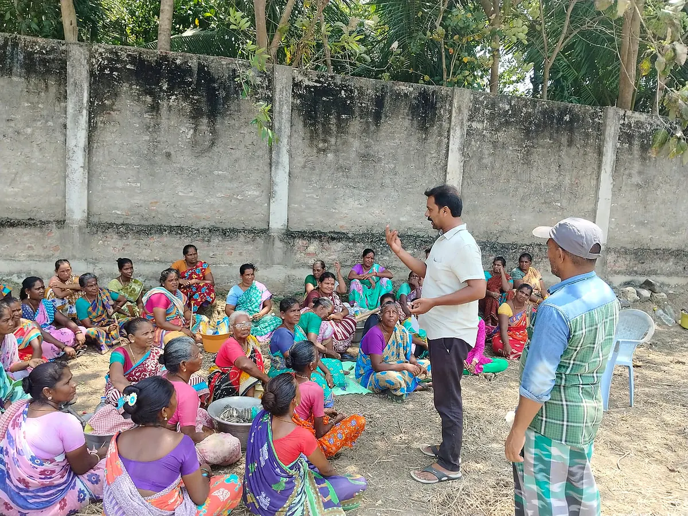
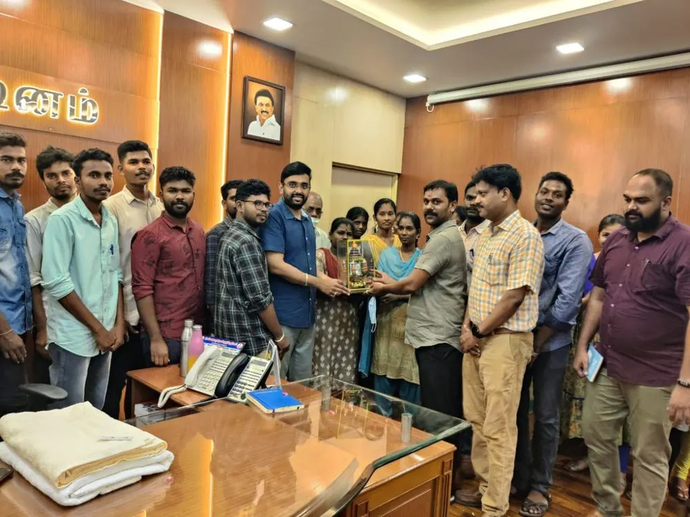
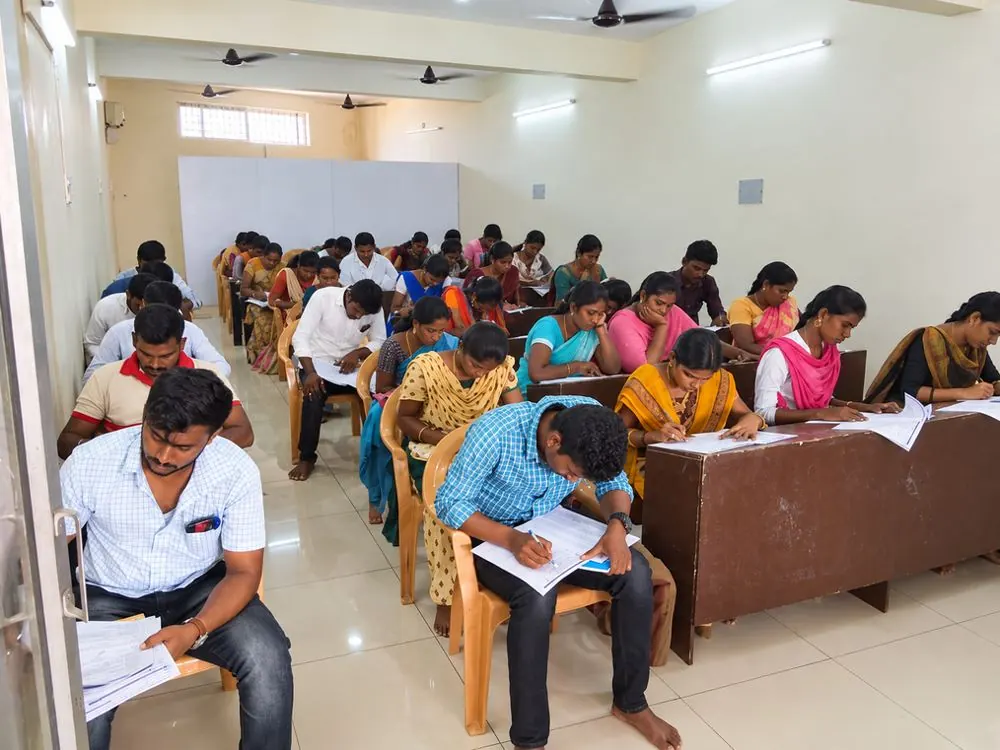
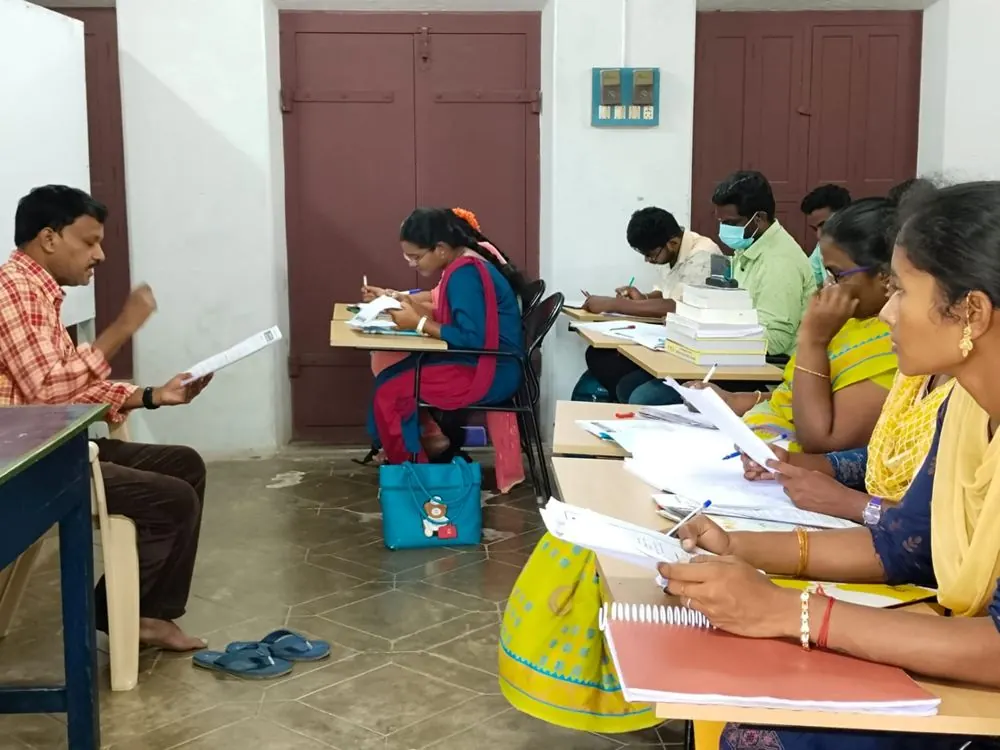
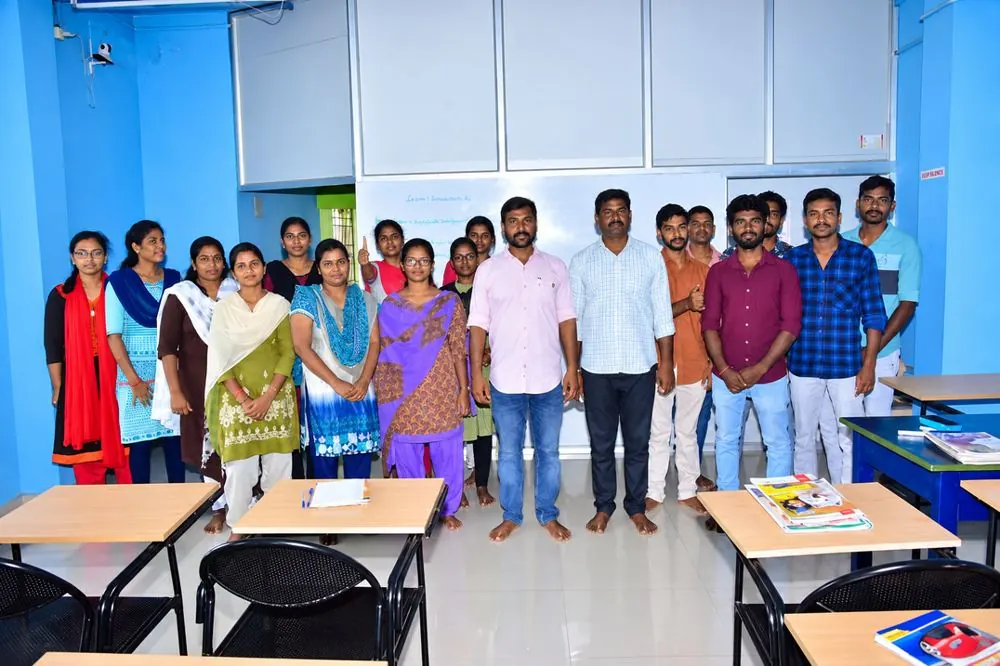


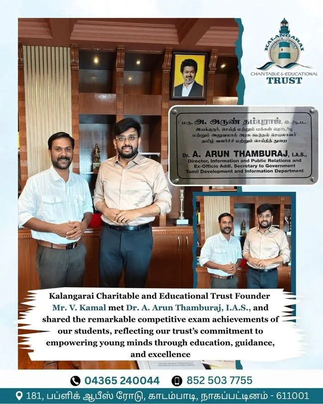
Every rupee and every hour goes into free coaching, a safe place to study and a real shot at a government career. Individuals, institutions and CSR partners can support a specific programme.
Cover books, study materials and mock tests for a TNPSC, TNUSRB or NEET aspirant.
Help rural aspirants stay and study full-time — accommodation, food and facilities.
Fund snacks, stationery, spoken-English and AI sessions for village children.
Smart boards, computers, a library and learning resources for the academy.
Adopt a programme with clear outcomes and reporting — education, livelihoods, women and youth.
Officers, teachers and professionals can take classes, mentor or speak to students.
We'll share our registration documents, financial statements and a programme proposal.
Copies are available to donors and CSR partners on request.
Read our Annual Report → Governance & reports →
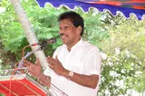

Reach us for student admissions, donations, volunteering and CSR partnerships.
Support free coaching, study materials, the residential centre and Sindhanai Sirpi.